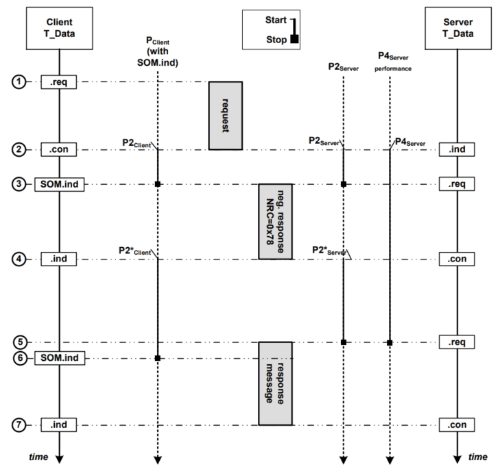
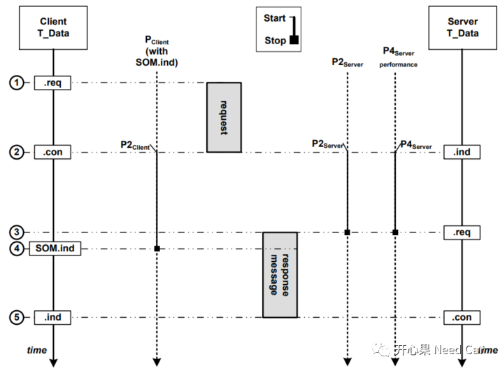

开心果 Need Car · 2022-01-27T20:22:00+08:00 · 微信原文
目前汽车嵌入式开发中，可以通过Bootloader升级应用程序（Application），而Bootloader多采用UDS协议（即14229）。虽然OEM都会告知供应商参考UDS，但是每家OEM的需求多少又有点不同。本文讨论Server响应时间对APP程序复位的影响，也聊一下APP跳转Boot的另一种方式。
在我们讨论正题之前，先明确P2Server、P2*Server、P4Server时间参数含义，参考UDS《14229-2》。P2Server和P2*Server这两个时间参数主要是对ECU性能的一个约束，具体要求多少由OEM决定。
P2Server：Server接收到上位机（Tester）的诊断请求到Server开始发送诊断响应的时间，比如：25ms或者50ms。这里注意一下，有的需求会要求在编程会话（$10 02）下P2Server = 25ms，在非编程会话下P2Server = 50ms。
P2*Server：Server接收到上位机（Tester）的诊断请求，此时记为T1，由于Server在P2Server时间内无法给上位机响应，但Server又能处理收到的这个请求，只是需要多一点时间，此时Server可以先给上位机回复一个否定响应（NRC0x78），争取额外时间处理诊断请求，之后给出响应，此时记为T2，T2-T1即P2*Server。比如：P2*Server = 5000ms（这也是UDS推荐值），这时Server在5000ms内给Tester响应即可。
P4Server：Server接收到上位机诊断请求，到Server发送响应的时间。这个时间内可能需要回复NRC0x78，也可能不用回复NRC0x78。
P2Server、P4Server关系：P2Server≤P4Server。也就是说P4Server最小等于P2Server时间，如果Server需要回NRC0x78，则P4Server = n * P2*Server（n是正整数，如：1、2...，一般需求会约束n的个数，比如n = 3）。
上述提到的时间均指最大响应时间，比如：P2Server = 50ms，就是说这个诊断请求要在50ms内回复，否则测试给你提bug。
P2Server、P2*Server、P4Server时间如下所示：

需求：
APP在编程会话下（$10 02）需要25ms内响应；
在编程会话下P4Server = P2Server = 25ms；
如果P4Server = P2Server，Server不能响应NRC0x78。
P4Server = P2Server时，Server（就是ECU节点，比如某路CAN）接收Client请求和应答时间行为如下所示，Server不能回复NRC0x78，这也是UDS明确给出的要求。

解读需求：
在APP下，Server必须25ms内应答Tester，即给出$50 02正确响应或者除0x78以外的否定响应;
Server应答Tester的$10 02请求时不能回复0x78，也就是不能争取额外的时间响应Tester。
解读完需求以后，我们如何实现这样的需求呢？常规做法：Server的APP程序收到Tester的$10 02请求，APP程序先给一个NRC0x78，之后跳转到Boot程序，Boot给出正响应$50 02，这个前面我们聊过，可以回顾UDS之刷写：你真清楚Application和Bootloader如何沟通？。但是显然，常规做法不能满足需求，我们说过App复位动作需要时间、Boot初始化需要时间、如果当前节点是网关（Gateway）节点，还需要等外挂的子节点回复给本节点响应后，再执行本节点复位，这都需要时间，显然25ms时间是常规做法所不能完成的。那这样的需求不能实现了？答：能。
需求实现：
我们还可以让当前节点先回复响应，再执行复位动作。即APP程序先给Tester应答，即APP程序先回正响应$50 02或者除0x78以外的否定响应（因为P4Server = P2Server，不让回复NRC0x78），不用Boot回复响应，这样即可极大的缩短响应时间，在25ms内给Tester应答。
但是这个做法有没有不妥当的地方？有！上位机（Tester）一般来说是脚本做的，诊断指令自动发送，尤其ECU下线刷写（EOL）时，讲究时间成本和自动化，Tester收到响应就会立马执行下一条诊断指令。Tester在25ms内收到App程序的响应，Tester马上发送下一个诊断指令，比如：$31服务，检查诊断电压。可是这个时候APP还没有完成复位动作，程序还没有真正的进入Boot，Boot是没有办法升级APP程序的。所以，我们必须约定一个时间，即ECU复位时间，确保ECU确实完成一个完整的复位动作，进入Boot以后再发送下一个诊断指令，避免Tester发送过快导致的程序刷写失败。
一般来说，会在需求中硬性的约束ECU的复位时间（这个是性能要求，不能打折），比如1.5s，这样在设计上位机的时候，要求上位机收到$50 02响应，1.5s以后再发送下一个诊断请求即可避免刷写失败的问题。
往期精彩回顾